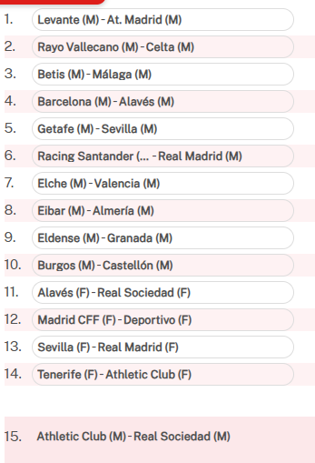

Registrada el 28/10/2026 a las 14:18, hora de Madrid, antes del cierre del 31/10/2026 a las 14:00.
Los catorce partidos tienen pronóstico del modelo y de la mezcla fija. Los masculinos incorporan cuotas reales; las posiciones femeninas conservan el modelo propio. Las columnas, configuración y entradas quedan congeladas.
La estrategia principal son 6 columnas independientes por 4,50 € teóricos por alternativa, dentro del límite de 5 € del experimento. El comparador y la mezcla son dos alternativas; no se suman como una compra.
Decisión económica: no apostar. Gasto real: 0 €. La estimación de rentabilidad sigue sin evidencia suficiente.
| Nº | Partido | C1 | C2 | C3 | C4 | C5 | C6 |
|---|---|---|---|---|---|---|---|
| 1 | Levante UD — Club Atlético de Madrid | 2 | 2 | 2 | 2 | 2 | 2 |
| 2 | Rayo Vallecano de Madrid — RC Celta de Vigo | 1 | 1 | 1 | 1 | 1 | 1 |
| 3 | Real Betis Balompié — Málaga CF | 1 | 1 | 1 | 1 | 1 | 1 |
| 4 | FC Barcelona — Deportivo Alavés | 1 | 1 | 1 | 1 | 1 | 1 |
| 5 | Getafe CF — Sevilla FC | 2 | 1 | 2 | 1 | X | 2 |
| 6 | Racing Santander — Real Madrid CF | 2 | 2 | 2 | 2 | 2 | 2 |
| 7 | Elche CF — Valencia CF | 1 | 1 | 1 | 1 | 1 | 1 |
| 8 | SD Eibar — UD Almería | 1 | 1 | 1 | 1 | 1 | 1 |
| 9 | Eldense — Granada CF | 1 | 1 | 1 | 1 | 1 | 1 |
| 10 | Burgos CF — CD Castellón | 2 | 2 | 2 | 2 | 2 | 1 |
| 11 | Deportivo Alavés [F] — Real Sociedad [F] | 2 | 2 | 2 | 2 | 2 | 2 |
| 12 | Madrid CFF [F] — Deportivo Abanca [F] | 1 | 1 | 2 | 2 | 1 | 1 |
| 13 | Sevilla FC [F] — Real Madrid CF [F] | 2 | 2 | 2 | 2 | 2 | 2 |
| 14 | Costa Adeje Tenerife [F] — Athletic Club [F] | 1 | 1 | 1 | 1 | 1 | 1 |
Pleno: 1-1. Cobertura estimada P(14): 0.0459%, condicionada al modelo y sus supuestos; no es probabilidad de beneficio.
Texto de la selección · Explorar mezcla · Explorar comparador

Confirmación manual mediante la captura del usuario. El recorte muestra orden, equipos y géneros; no muestra URL, fecha ni número de jornada. La atribución al concurso se apoya en la conversación y en los cruces contrastados con LaLiga.
Resultados deportivos para log loss, Brier y calibración; signos adjudicados y premios oficiales para liquidar las carteras de cobertura en papel. Los premios desconocidos permanecen pendientes y las decisiones económicas mantienen su propio registro. No se escogerá después la estrategia que mejor haya salido.
La pareja tiene 14 partidos pendientes. El protocolo conserva el final del 1 de julio de 2027. Los modelos no se ajustan con esta jornada.
El registro económico se hizo antes del cálculo y conserva el motivo de falta de pronóstico en ese momento, además de los bloqueos económicos. Los pronósticos ahora disponibles se guardan en sus registros propios.